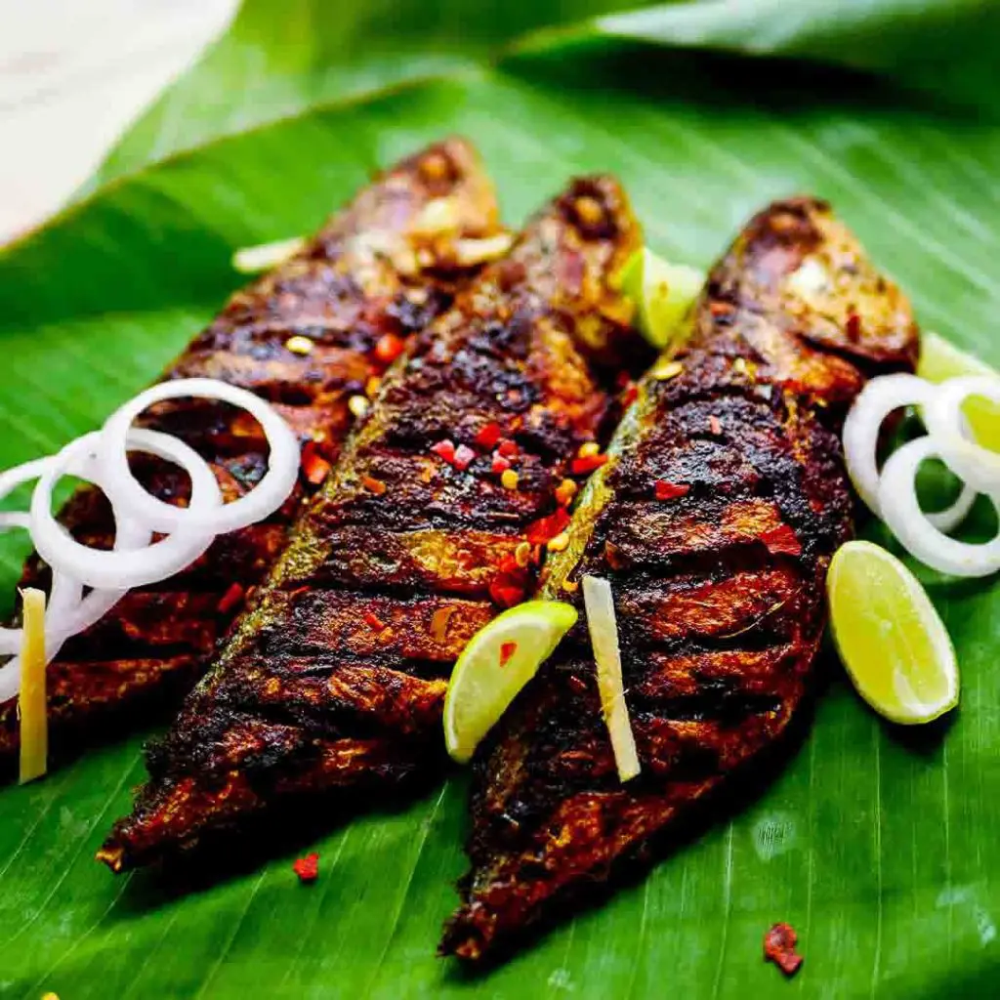

Fried Fish Masala :-

Description
Cooking Time:-
Preperation Time: 45 Min Cook Time: 20 Min Total Time : 1 Hr 5 Min
Ingrediants:-
- Rohu fish cut into medium thick pieces without head 1 kgs
- Garlic cloves 10-12 nos
- Turmeric powder 1 tsp
- Dry Red chilli soaked in hot water 5 nos
- Mustard oil for shallow frying 1/2 cups
- Salt 1 tsp
- Green coriander chutney 1/4 cups
- Onion chopped lengthwise 1 nos
- Green chilli chopped 2 nos
- Coriander leaves 1 tsp
- Lemon 2 nos/
- White vinegar 2 tbsp
Directions
- Wash fish pieces with running water 3-4 times.
- Fourth time keep fish pieces in water. Now add vinegar in water and mix it up properly. Leave it for 2 minutes then drain excess water.
- Keep fish pieces in strainer so that exess water will drain.
- Put soaked chillies, garlic, a pinch of salt and 1 tbsp water in chutney jar. Make fine paste of all ingredients.
- Put fish in a large bowl. Add garlic paste, turmeric powder, salt, one tsp mustard oil in fish. Rub masala on fish and keep it for at least for 1/2 hour. You can keep it for more time if you are not in hurry.
- Heat 1/4 cup oil in a heavy bottom pan on high heat for 2 minutes then reduced heat on medium.
- Put some pieces in frypan and cook for 3 - 4 minutes. Then flip all pieces very carefully. Fry other side of fish till pink / light brown colour or as per your preference. It will take another 2 - 3 minutes
- Now add rest of oil in the pan and heat.
- Repeat same process for rest of pieces till done.
- One important thing to remember if you are not using non-stick pan first heat heavy bottom pan / kadai without oil on high heat then put oil in it and heat on high flame after that reduced heat on medium to low. Oil should be properly heat otherwise fish pieces could stick to pan and break while flipping.
- While frying fish take another bowl. Put sliced onion, green chillies, coriander leaves,lemon juice and mix well.
- Serve hot fried fish pieces with onion salad and coriander chutney.